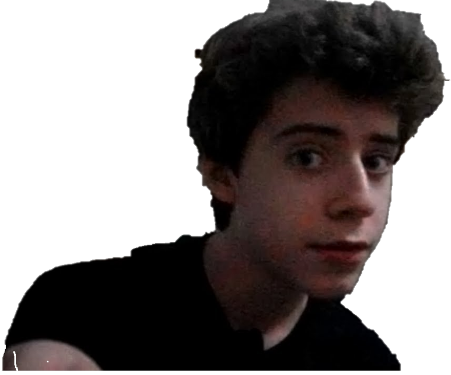
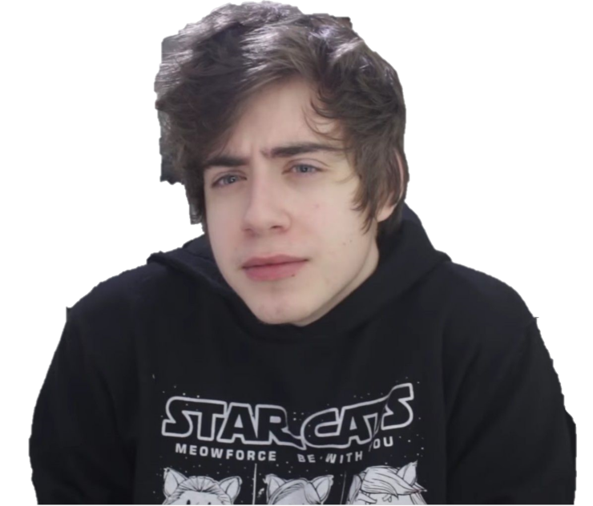
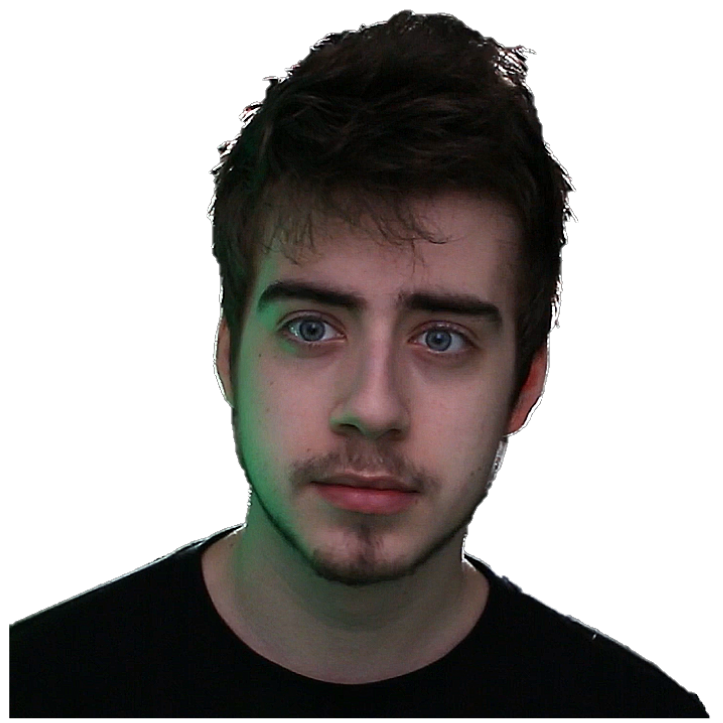
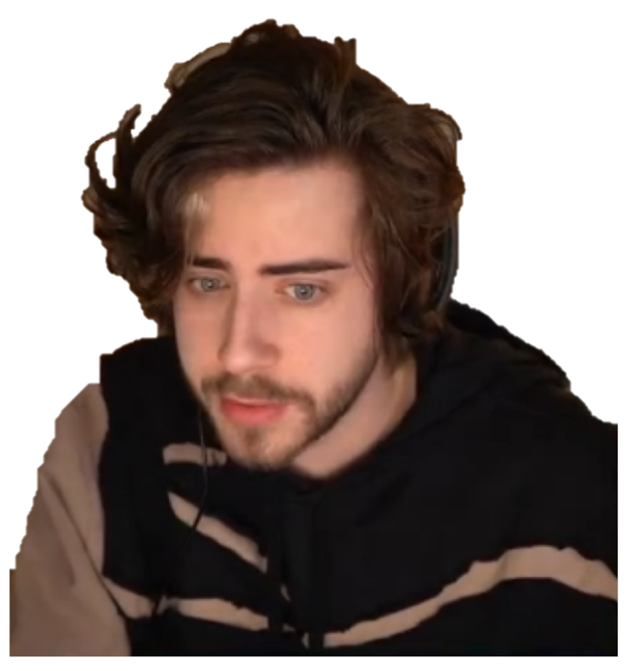

Conheça Rafael Lange, ou melhor, Cellbit, o tal "Deus gamer?". Conheça um dos maiores influencers na área de games do Brasil, desde seu inicio de carreira até os dias atuais
SOBRE
Inicio
Cellbit, cujo nome real é Rafael Lange, nasceu em 11 de fevereiro de 1997, em Florianópolis, Santa Catarina.
No entanto, ele cresceu em Carazinho, no Rio Grande do Sul, juntamente com seus dois irmãos, Henrique e Felipe.
Desde uma idade precoce, Cellbit desenvolveu um interesse apaixonado por jogos de puzzle e enigmas.
Esse amor pelos desafios começou aos 9 anos de idade, quando seu irmão mais velho, Henrique, apresentou-lhe o site Notpron,
famoso por ser "o enigma mais difícil da internet". Juntos, Henrique e Rafael mergulharam nessa jornada desafiadora e,
em menos de um ano, conseguiram superar 139 dos 140 níveis que o jogo possuía na época. Eles permaneceram por incríveis
6 anos no último nível, demonstrando sua dedicação e habilidades únicas na resolução de enigmas.
Essa experiência inicial com jogos de puzzle e enigmas certamente influenciou a trajetória de Cellbit
como criador de conteúdo online, no qual ele se destaca por sua criatividade e capacidade de entreter seu público.
Sua habilidade em resolver problemas complexos e sua dedicação em superar desafios se refletem em seu trabalho
e contribuíram para sua popularidade como criador de conteúdo.
Em um vídeo de perguntas e respostas, Cellbit expressou sua preferência por não discutir publicamente sua vida pessoal,
considerando-a desnecessária. Em vez disso, ele opta por concentrar-se exclusivamente em suas criações.
Essa abordagem reflete sua vontade de manter sua vida privada separada de sua persona online, priorizando
a produção de conteúdo para seu público.
2012-2013

O começo
Nessa época, ele focou principalmente em vídeos de gameplay de Minecraft, um jogo extremamente popular na comunidade de jogos eletrônicos.
Com seu estilo descontraído e engraçado, Cellbit conquistou uma base de fãs em crescimento, que apreciava suas aventuras e criações dentro do
mundo virtual de Minecraft. Ele se destacava por sua narrativa cativante e sua habilidade em contar histórias envolventes,
mantendo seu público entretido e interessado em seus vídeos.
Além de Minecraft, Cellbit também explorou outros jogos e expandiu seu conteúdo para incluir gameplays de diferentes títulos.
Ele começou a estabelecer uma presença nas redes sociais, interagindo com sua crescente comunidade de fãs e construindo uma
conexão mais próxima com eles.
Nesse período, Cellbit também teve a oportunidade de participar de eventos e convenções relacionados a jogos, onde teve a
chance de se encontrar pessoalmente com seus fãs e compartilhar sua paixão pelo mundo dos games.
Cellbit mostrou seu talento em contar histórias ao criar séries de vídeos com narrativas complexas e intrigantes,
envolvendo seus fãs em enredos emocionantes. Essas séries geraram grande expectativa e engajamento em sua audiência,
mantendo-os ansiosos para acompanhar a próxima parte da história.
Ao longo desse período, Cellbit também demonstrou seu interesse por dublagens, participando de projetos de animação
e emprestando sua voz a personagens virtuais.
2014-2015
Pra jogar a toda hora?
Durante esse período, ele expandiu sua variedade de conteúdo, explorando novos jogos além de Minecraft, como Five Nights at Freddy's,
Outlast e outros títulos populares de terror.
Cellbit também demonstrou sua versatilidade ao criar vídeos de desafios, gameplays engraçadas e colaborações com outros criadores
de conteúdo, fortalecendo sua presença na comunidade online. Ele se destacou por sua personalidade carismática e sua capacidade
de entreter seu público com seu senso de humor único.
Além disso, Cellbit iniciou uma série de vídeos chamada "The Sims Craft", onde explorava e narrava histórias dentro do jogo The Sims.
Essa série se tornou extremamente popular, atraindo uma grande base de fãs e reforçando ainda mais sua posição como influenciador digital.
Durante esses anos, Cellbit também participou de eventos e convenções, onde teve a oportunidade de interagir pessoalmente com seus fãs
e criar laços mais próximos com sua comunidade.
Cellbit se aventurou em jogos de suspense e terror, como The Walking Dead, Alien: Isolation e Until Dawn. Sua habilidade em criar uma
atmosfera envolvente e transmitir suas reações genuínas atraiu a atenção de fãs interessados em conteúdo emocionante e assustador.
Cellbit participou de colaborações com outros influenciadores e criadores de conteúdo populares. Essas parcerias ampliaram sua exposição
e alcançaram novos públicos, contribuindo para seu crescimento contínuo. Sua presença carismática e espontânea em vídeos colaborativos
agregaram um elemento adicional de diversão e entretenimento.
O meme 😂😂
0_0
O comercial que mencionou, "pra jogar a toda hora e mais nada", refere-se a uma campanha publicitária da empresa de telefonia Vivo,
lançada em 2015. Nesse comercial, Cellbit foi um dos influenciadores digitais selecionados para promover a oferta de pacotes de dados
móveis da Vivo, voltados para o uso intenso de jogos.
No vídeo, Cellbit aparece em um cenário descontraído, expressando entusiasmo e animação enquanto destaca a possibilidade de jogar sem limites,
enfatizando a ideia de que, com os pacotes de dados da Vivo, os usuários poderiam aproveitar os jogos em seus dispositivos móveis a qualquer hora e em qualquer lugar.
O comercial foi bem recebido pelo público, especialmente pelos fãs de Cellbit, que apreciaram sua participação na campanha e se
identificaram com a mensagem de liberdade e diversão relacionada aos jogos.
A frase "pra jogar a toda hora e mais nada" se tornou um destaque do comercial e foi amplamente associada a Cellbit, sendo mencionada
e relembrada como um "meme" pelos fãs e seguidores nas redes sociais.
2016-2017

Versatilidade
Nesse período, ele continuou a diversificar seu conteúdo e a explorar novos jogos e formatos de vídeo.
Cellbit expandiu seu repertório de jogos, incluindo títulos como Undertale, Until Dawn, Outlast 2 e diversos outros,
cativando sua audiência com gameplays emocionantes e reações autênticas. Sua habilidade em transmitir emoções e
nvolver o público contribuiu para a manutenção de sua base de fãs e a atração de novos seguidores.
Além disso, Cellbit explorou diferentes formatos de vídeos, como vlogs, desafios e séries temáticas.
Ele continuou a aprimorar suas habilidades de contar histórias, criando narrativas envolventes
e cativantes em suas séries de vídeos. Essas séries foram recebidas com entusiasmo pelo público,
mantendo-os ansiosos por cada novo episódio.
Durante esse período, Cellbit também participou de eventos e convenções de jogos, onde teve a oportunidade
de interagir com seus fãs pessoalmente, realizar meet and greets e compartilhar experiências com outros influenciadores.
Sua personalidade autêntica e seu carisma continuaram a atrair seguidores leais, enquanto sua habilidade em se adaptar
a diferentes jogos e formatos de conteúdo solidificou sua posição como um dos principais criadores de conteúdo no Brasil.
2018-2019

Expansão
Nesses anos, ele se destacou por sua capacidade de diversificar suas atividades e explorar novas oportunidades.
Cellbit ampliou seu repertório de conteúdo, abordando uma variedade de jogos e formatos de vídeos em seu canal no YouTube.
Além disso, ele participou de projetos de dublagem, emprestando sua voz a personagens de animação e jogos, o que permitiu
que ele expandisse sua atuação para além do universo dos games.
Além de suas atividades online, Cellbit também esteve envolvido em eventos e convenções, onde teve a oportunidade de interagir
pessoalmente com seus fãs, participar de painéis e compartilhar experiências com outros criadores de conteúdo.
No decorrer desses anos, Cellbit continuou a estabelecer parcerias e colaborações com outros influenciadores,
o que fortaleceu sua presença no cenário digital e ampliou seu alcance para novas audiências.
Ele iniciou uma parceria com a plataforma de streaming Twitch, onde transmitia ao vivo suas sessões de gameplay
e interagia em tempo real com seus espectadores. A Twitch é a sua principal plataforma ate os dias atuais, que
ele é focado fazendo lives de diversos temas, o principal, gameplay.
2020-2021
Projetos e conquistas
Nesses anos, ele se envolveu em uma variedade de projetos e iniciativas, expandindo ainda mais seu alcance e diversificando seu conteúdo.
Cellbit lançou a série "Ordem Paranormal" em 2020, explorando narrativas de terror e suspense que cativaram seu público, um real "RPG". A série recebeu grande repercussão
e gerou entusiasmo entre os fãs, que acompanharam ansiosamente cada episódio lançado. E nesse mesmo ano, ele anunciou que iria fazer um jogo sobre o RPG, o Enigma do Medo.
Também continuou a criar vídeos de gameplay em seu canal no YouTube, explorando diferentes jogos e gêneros para entreter
e envolver seu público. Sua habilidade em contar histórias envolventes e transmitir emoções autênticas continuou a atrair espectadores.
Cellbit também esteve envolvido em parcerias e colaborações com outros influenciadores e marcas, ampliando sua presença no cenário digital.
Ele participou de campanhas publicitárias e eventos promocionais, estabelecendo conexões com marcas reconhecidas.
Além disso, Cellbit se dedicou a projetos pessoais, como o lançamento do seu segundo livro intitulado "A Ordem",
uma continuação da sua primeira obra literária. Ele mostrou seu talento como escritor e sua habilidade em criar histórias envolventes fora do ambiente digital.
Em 2021, Cellbit também participou de eventos e convenções, onde teve a oportunidade de interagir pessoalmente com seus fãs
e compartilhar experiências com outros criadores de conteúdo.
2022-2023

Inovação
Emfim 2022-2023. Nesse periodo, Cellbit focou mais em sua plataforma de streaming Twitch, deixando o canal principla do youtube "parado", e postando
cortes de suas lives no seu canal segundario, Bitcell.
Em 2022, ele fez a maior live que ele ja tinha feito ate entao. Uma live enorme em que bateu quase 11 dias seguidos. Nela, Cellbit jogou varios jogos
sozinho e com o chat, dormiu com a live aberta etc. A regra da live era: Quando ele ganhava uma sub (inscrição da twitch) aumentava seu tempo de live em 40sec,
algo que depois foi baixado para 10sec. E incrivelmente ele conseguiu completar o desafio de acabar o tempo.
Em 2023 ele começou um nova serie, e essa se chama "QSMP" uma serie que representa a volta de Cellbit para o Minecraft. Nela contem varios youtubers de todo
o mundo, o que esta sendo uma experiência unica para cada um. A serie esta rolando ate o momento do desenvolvimento desse site.
Dia 16/06/2023, Cellbit gravou uma pequena gameplay em live apresentando o seu jogo tão esperado pelo publico a quase 3 anos. A data não foi confirmada, porém,
ele mesmo diz que irá sair ainda esse ano. A repercução esta enorme em expectativa para o novo jogo, Enigma do Medo.
Gabriel Alboneti Silva - @Todos os direitos reservados
Trabalho acadêmico - Sem fins lucrativos